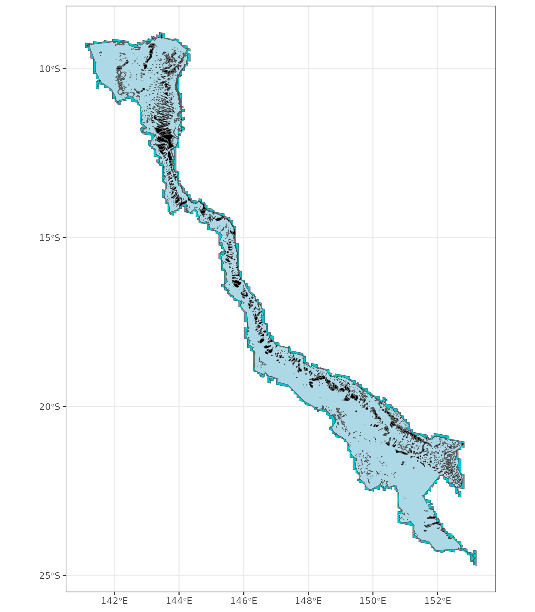

Extracting SST and spatial data
extracting_data.Rmd
library(dhw)
#> library(dhw) dev v0.0.4
library(sf)
#> Linking to GEOS 3.10.2, GDAL 3.4.1, PROJ 8.2.1; sf_use_s2() is TRUE
library(tidyverse)
#> Error in get(paste0(generic, ".", class), envir = get_method_env()) :
#> object 'type_sum.accel' not found
#> ── Attaching core tidyverse packages ──────────────────────── tidyverse 2.0.0 ──
#> ✔ dplyr 1.1.4 ✔ readr 2.1.5
#> ✔ forcats 1.0.0 ✔ stringr 1.5.1
#> ✔ ggplot2 3.5.1 ✔ tibble 3.2.1
#> ✔ lubridate 1.9.4 ✔ tidyr 1.3.1
#> ✔ purrr 1.0.2
#> ── Conflicts ────────────────────────────────────────── tidyverse_conflicts() ──
#> ✖ dplyr::filter() masks stats::filter()
#> ✖ dplyr::lag() masks stats::lag()
#> ℹ Use the conflicted package (<http://conflicted.r-lib.org/>) to force all conflicts to become errors
library(terra)
#> terra 1.8.5
#>
#> Attaching package: 'terra'
#>
#> The following object is masked from 'package:tidyr':
#>
#> extractExtract GBR spatial data
Use this function to download the GBR Reefs dataset via eAtlas. Several versions of the GBRMPA shp file exist, this version from eAtlas include the Torres Straits:
This dataset consists of a shapefile of the reefs, islands, sand banks, cays and rocks of the whole Great Barrier Reef (GBR) including Torres Strait. This dataset is an extension of the mapping in the GBR Marine Park to include Torres Strait. The Torres Strait region was mapped at a scale of 1:50,000 (Lawrey, E. P., Stewart M., 2016) and these new features are referred to as the “Torres Strait Reef and Island Features” dataset. The Complete GBR Reef and Island Features dataset integrates the “Torres Strait Reef and Island Features” dataset with the existing “GBR Features” (Great Barrier Reef Marine Park Authority, 2007) to create a single composite dataset of the whole Great Barrier Reef.
for metadata see here:
The function returns either “hull” (convex hull around reefs), “base” (basic with no changes), or “combined” (polygons merged to reef ID)
#gbr_reefs <- download_gbr_spatial(return="combined")
gbr_reefs <- download_gbr_spatial(return="base")
#> Downloading spatial data...
#> Reading and transforming shapefile...
gbr_reefs
#> Simple feature collection with 9612 features and 35 fields
#> Geometry type: POLYGON
#> Dimension: XY
#> Bounding box: xmin: 138.0012 ymin: -29.17855 xmax: 153.5516 ymax: -8.679173
#> Geodetic CRS: GDA94
#> First 10 features:
#> TARGET_FID DATASET LOC_NAME_S GBR_NAME CHART_NAME
#> 1 1 TS Features U/N Sand Bank (09-347a) U/N Sand Bank <NA>
#> 2 2 TS Features U/N Sand Bank (09-347) U/N Sand Bank <NA>
#> 3 3 TS Features U/N Sand Bank (09-355z) U/N Sand Bank <NA>
#> 4 4 TS Features U/N Sand Bank (09-355a0) U/N Sand Bank <NA>
#> 5 5 TS Features U/N Sand Bank (09-355a1) U/N Sand Bank <NA>
#> 6 6 TS Features U/N Sand Bank (09-355v) U/N Sand Bank <NA>
#> 7 7 TS Features U/N Sand Bank (09-355x) U/N Sand Bank <NA>
#> 8 8 TS Features U/N Sand Bank (09-355y) U/N Sand Bank <NA>
#> 9 9 TS Features U/N Sand Bank (09-355w) U/N Sand Bank <NA>
#> 10 10 TS Features U/N Sand Bank (09-373) U/N Sand Bank <NA>
#> TRAD_NAME UN_FEATURE LABEL_ID SORT_GBR_I FEAT_NAME LEVEL_1 LEVEL_2
#> 1 <NA> TRUE 09-347a 9347 Bank Bank Sand Bank
#> 2 <NA> TRUE 09-347 9347 Bank Bank Sand Bank
#> 3 <NA> TRUE 09-355z 9355 Bank Bank Sand Bank
#> 4 <NA> TRUE 09-355a0 9355 Bank Bank Sand Bank
#> 5 <NA> TRUE 09-355a1 9355 Bank Bank Sand Bank
#> 6 <NA> TRUE 09-355v 9355 Bank Bank Sand Bank
#> 7 <NA> TRUE 09-355x 9355 Bank Bank Sand Bank
#> 8 <NA> TRUE 09-355y 9355 Bank Bank Sand Bank
#> 9 <NA> TRUE 09-355w 9355 Bank Bank Sand Bank
#> 10 <NA> TRUE 09-373 9373 Bank Bank Sand Bank
#> LEVEL_3 CLASS_CONF CLASS_SRC POLY_ORIG IMG_SRC SUB_NO CODE
#> 1 Sand Bank High Landsat New Landsat 101 09-347-110-101
#> 2 Sand Bank High Landsat New Landsat 100 09-347-110-100
#> 3 Sand Bank High Landsat New Landsat 126 09-355-110-126
#> 4 Sand Bank High Landsat New Landsat 127 09-355-110-127
#> 5 Sand Bank High Landsat New Landsat 128 09-355-110-128
#> 6 Sand Bank High Landsat New Landsat 122 09-355-110-122
#> 7 Sand Bank High Landsat New Landsat 124 09-355-110-124
#> 8 Sand Bank High Landsat New Landsat 125 09-355-110-125
#> 9 Sand Bank High Landsat New Landsat 123 09-355-110-123
#> 10 Sand Bank High Landsat New Landsat 100 09-373-110-100
#> FEATURE_C QLD_NAME X_LABEL GBR_ID LOC_NAME_L X_COORD Y_COORD
#> 1 110 U/N Sand Bank <NA> <NA> <NA> 143.0781 -9.270715
#> 2 110 U/N Sand Bank <NA> <NA> <NA> 143.0429 -9.293290
#> 3 110 U/N Sand Bank <NA> <NA> <NA> 143.1020 -9.388480
#> 4 110 U/N Sand Bank <NA> <NA> <NA> 143.0973 -9.388562
#> 5 110 U/N Sand Bank <NA> <NA> <NA> 143.0940 -9.390258
#> 6 110 U/N Sand Bank <NA> <NA> <NA> 143.1209 -9.386653
#> 7 110 U/N Sand Bank <NA> <NA> <NA> 143.0837 -9.393855
#> 8 110 U/N Sand Bank <NA> <NA> <NA> 143.1636 -9.405083
#> 9 110 U/N Sand Bank <NA> <NA> <NA> 143.0506 -9.404345
#> 10 110 U/N Sand Bank <NA> <NA> <NA> 142.9252 -9.756551
#> SHAPE_AREA SHAPE_LEN Checked RegionID LatitudeID GroupID PriorityLb
#> 1 0.78616854 10.4794306 FALSE 13 9 347 FALSE
#> 2 2.95336187 17.8452808 FALSE 13 9 347 TRUE
#> 3 0.17314345 2.0730203 FALSE 13 9 355 FALSE
#> 4 0.05753826 1.0656155 FALSE 13 9 355 FALSE
#> 5 0.03254316 0.7397521 FALSE 13 9 355 FALSE
#> 6 3.57375838 16.4615152 FALSE 13 9 355 FALSE
#> 7 0.88188514 7.8675980 FALSE 13 9 355 FALSE
#> 8 0.32171390 2.9717605 FALSE 13 9 355 FALSE
#> 9 1.52979291 14.3151950 FALSE 13 9 355 FALSE
#> 10 1.65930929 9.6393642 FALSE 14 9 373 TRUE
#> Country UNIQUE_ID geometry
#> 1 Papua-New Guinea 09347110101 POLYGON ((143.0851 -9.26657...
#> 2 Papua-New Guinea 09347110100 POLYGON ((143.0549 -9.29339...
#> 3 Papua-New Guinea 09355110126 POLYGON ((143.1056 -9.3908,...
#> 4 Papua-New Guinea 09355110127 POLYGON ((143.0985 -9.39007...
#> 5 Papua-New Guinea 09355110128 POLYGON ((143.0939 -9.39146...
#> 6 Papua-New Guinea 09355110122 POLYGON ((143.1298 -9.36866...
#> 7 Papua-New Guinea 09355110124 POLYGON ((143.0905 -9.38934...
#> 8 Papua-New Guinea 09355110125 POLYGON ((143.1675 -9.40401...
#> 9 Papua-New Guinea 09355110123 POLYGON ((143.0739 -9.39021...
#> 10 Australia 09373110100 POLYGON ((142.9353 -9.77388...
GBR_hull <- download_gbr_spatial(return="hull", crs = "EPSG:7844")
#> Downloading spatial data...
#> Reading and transforming shapefile...Set up a boundary to mask the raster data by buffering a 1km concave hull surrounding the GBR Reefs:
gbr_reefs_border <- gbr_reefs |>
st_make_valid() |>
dplyr::filter(FEAT_NAME %in% c("Reef", "Terrestrial Reef"))
gbr_reefs_hull <- gbr_reefs_border |>
concaveman::concaveman() |>
st_make_valid()
gbr_reefs_hull_buffered <- gbr_reefs_hull |>
st_buffer(1000)
ggplot() + theme_bw() +
geom_sf(data=gbr_reefs_hull_buffered, fill="turquoise3") +
geom_sf(data=gbr_reefs_hull, fill="lightblue") +
geom_sf(data=gbr_reefs_border, fill="black") 
Downloading and extracting SST data
NOAA provide many options for downloading SST data. ERDAPP via the
rerdapp library is very useful for smaller requests, but
(in my experience) downloading long-time series or large spatial extents
of data can result in signficant timeouts.
Below are three helper functions that directly download CRW, OISST, and ERA5 datasets at global scales:
Extract NOAA CoralTemp spatial data
download_CoralTemp() pulls global data from the
ncei https as follows:
download_CoralTemp(url = "https://www.ncei.noaa.gov/thredds-ocean/fileServer/crw/5km/v3.1/nc/v1.0/daily/",
start_date = "2024-01-01",
end_date = "2024-12-31",
dest_dir = "/Volumes/Extreme_SSD/dhw/CRW/2024/",
variable = "sst",
mc.cores = 1)
download_CoralTemp(url = "https://www.ncei.noaa.gov/thredds-ocean/fileServer/crw/5km/v3.1/nc/v1.0/daily/",
start_date = "2024-01-01",
end_date = "2024-12-31",
dest_dir = "/Volumes/Extreme_SSD/dhw/CRW/2024/",
variable = "dhw",
mc.cores = 1)the full global dataset for four variables (sst, ssta, hs, dhw) is 520.78GB in individual ~10-11MB .nc files.
process_CoralTemp does three functions: 1) crop-mask to
a polygon shape (here the GBR hull), 2) combine rast files
using c(), 3) output to an .rds file for
saving. The function will be paralellised (later) as it is
slow
process_CoralTemp(input = "/Volumes/Extreme_SSD/dhw/CRW/CRW_SST",
polygon = GBR_hull, crs = "EPSG:7844",
combinedfilename = "/Volumes/Extreme_SSD/dhw/summaries/GBR_CoralTemp_full.rds",
crop=TRUE, mask=TRUE, downsample=FALSE)
GBR_CoralTemp_full <- readRDS( "/Volumes/Extreme_SSD/dhw/summaries/GBR_CoralTemp_full.rds")
process_CoralTemp(input = "/Volumes/Extreme_SSD/dhw/CRW/CRW_DHW",
polygon = GBR_hull, crs = "EPSG:7844",
combinedfilename = "/Volumes/Extreme_SSD/dhw/summaries/GBR_CoralTemp_DHW_full.rds",
crop=TRUE, mask=TRUE, downsample=FALSE)Alternatively, cdo offers a much faster workflow using
cdo mergetime *.nc outfile and cropped to the GBR extent
usingremapbil,target_grid_file.nc input.nc regridded_output.nc
(note: CDO does not directly support cropping to irregular polygons, so
remapbil sets to the extent (bbox).
Extract OISST
download_OISST() pulls global data from the
ncei https as follows:
download_OISST(url = "https://www.ncei.noaa.gov/data/sea-surface-temperature-optimum-interpolation/v2.1/access/avhrr/",
start_date = "2024-12-15",
end_date = "2024-12-15",
dest_dir = "/Volumes/Extreme_SSD/dhw/OISST/2024/",
mc.cores = 12)the full global dataset is 26.39GB in individual ~10-11MB .nc files.
process_OISST does three functions: 1) crop-mask to a
polygon shape (here the GBR hull), 2) combine rast files
using c(), 3) output to an .rds file for
saving. The function will be paralellised (later) as it is
slow
process_OISST(input = "/Volumes/Extreme_SSD/dhw/OISST/",
polygon = GBR_hull, crs = "EPSG:7844",
combinedfilename = "/Volumes/Extreme_SSD/dhw/summaries/GBR_OISST_full.rds",
crop=TRUE, mask=TRUE, downsample=FALSE)
terra::rast("/Volumes/Extreme_SSD/dhw/summaries/GBR_OISST_full.rds")
Alternatively, cdo offers a much faster workflow using
cdo mergetime *.nc outfile and cropped to the GBR extent
usingremapbil,target_grid_file.nc input.nc regridded_output.nc
(note: CDO does not directly support cropping to irregular polygons, so
remapbil sets to the extent (bbox).
Extract ERA5
ERA5 doesn’t have a direct https link as far as I’m
aware. The download_ERA5() function uses the
ecmwfr interface to ‘ECMWF’ and ‘CDS’ Data Web Services to
access the daily SST data via Copernicus.
Once downloaded, the process_ERA5() function combines the
outputs to a single rast file.
download_ERA5(
start_year = 1940,
end_year = 2024,
ecmwfr_key = "381246a1-68c9-4e99-aab2-44c36d6da73d",
timeout=60,
dest_dir = "/Volumes/Extreme_SSD/dhw/ERA5/"
)
process_ERA5(input = "/Volumes/Extreme_SSD/dhw/ERA5/", units = "celsius",
polygon = GBR_hull, crs = "EPSG:7844",
combinedfilename = "/Volumes/Extreme_SSD/dhw/summaries/GBR_ERA5_full.rds",
crop=TRUE, mask=TRUE, downsample=FALSE)
terra::rast("/Volumes/Extreme_SSD/dhw/summaries/GBR_ERA5_full.rds")